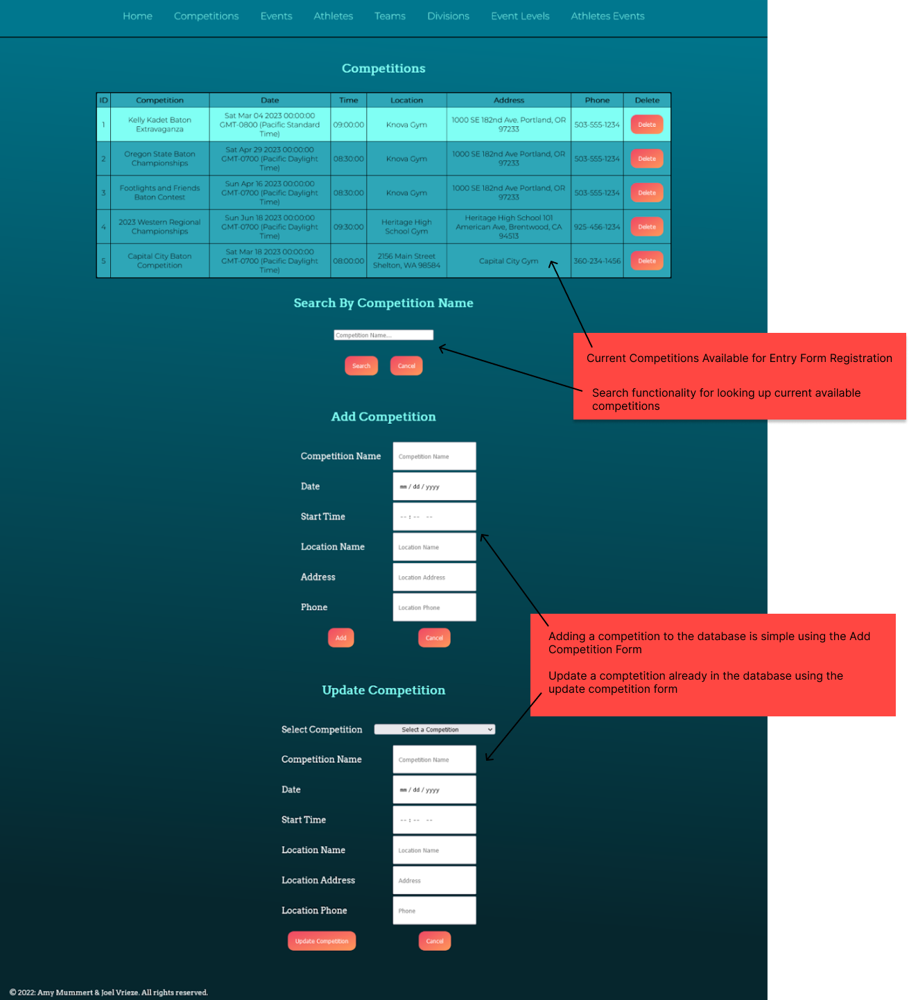
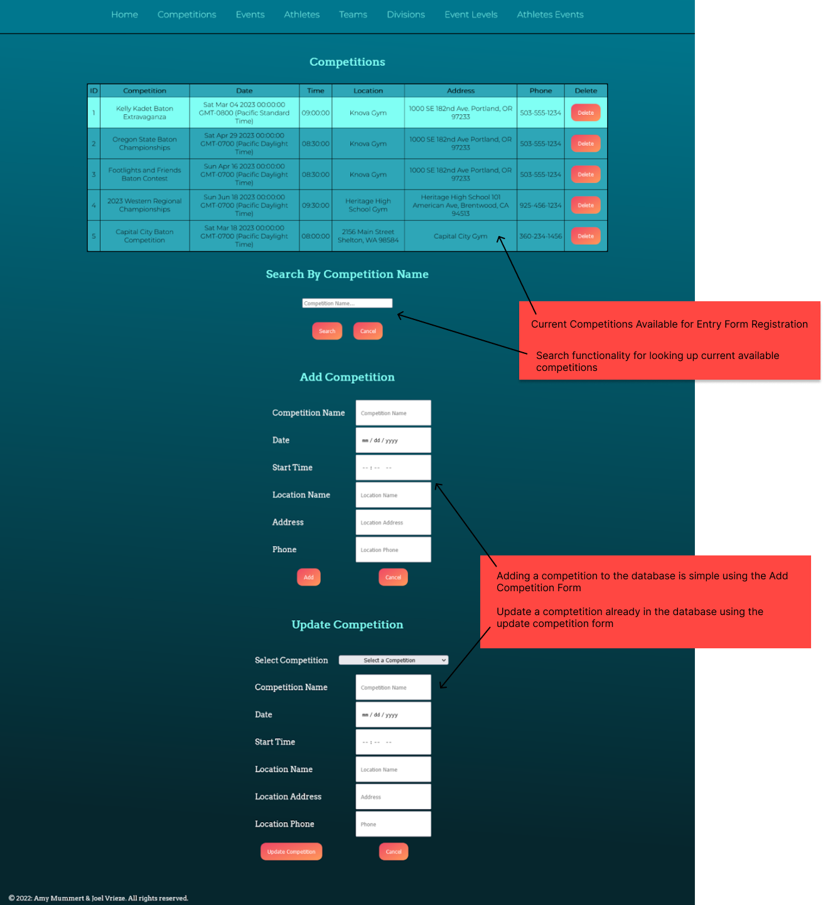
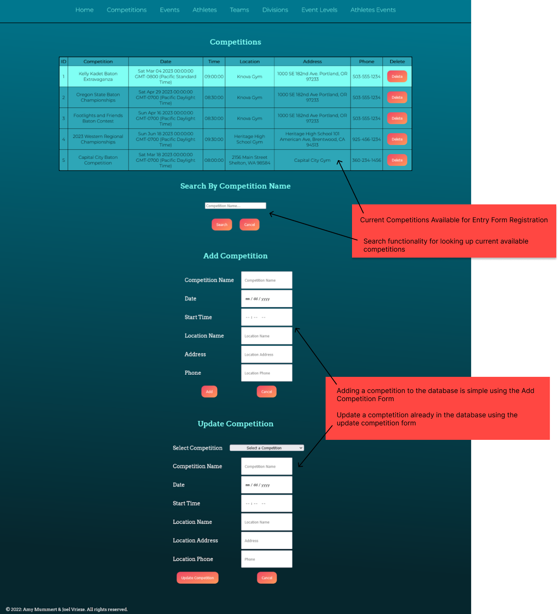

The Baton Twirling Competition Entry Form Database (BTCE) creates an entry form for baton twirling competitions for approximately 52 competitions per year and hundreds of events. A competition includes events that baton twirling athletes can register for and compete in. Athletes who enter in a competition can register to enter one or more events within that competition. Events include, but are not limited to, basic march, military march, parade march, presentation, 2-baton, 3-baton, solo, strut, and artistic twirl. The database includes six entity tables, one category table, and six relationships between tables. The tables are Competitions, Events, Teams, Athletes, and Divisions. The category table is named EventLevels. The database has one transition table between Events and Athletes, named Athletes_Events.
